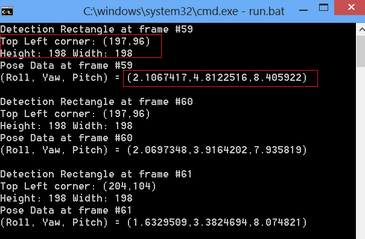

Java Sample: DF_FaceTracking |
Top Previous Next |
|
The $(RSSDK_DIR)/framework/Java/DF_FaceTracking sample shows how to run the SDK in Java for face tracking. The sample is tested under Java JDK 1.7.0_11. Use the following steps to run the sample:
 Figure 158: The face_tracking_java Sample Window
|